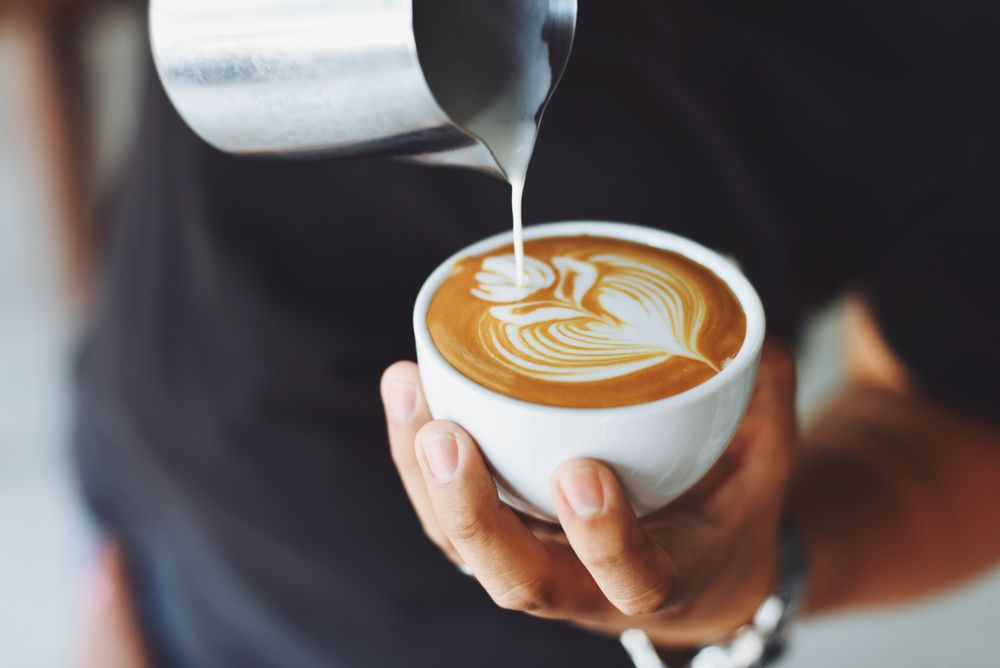
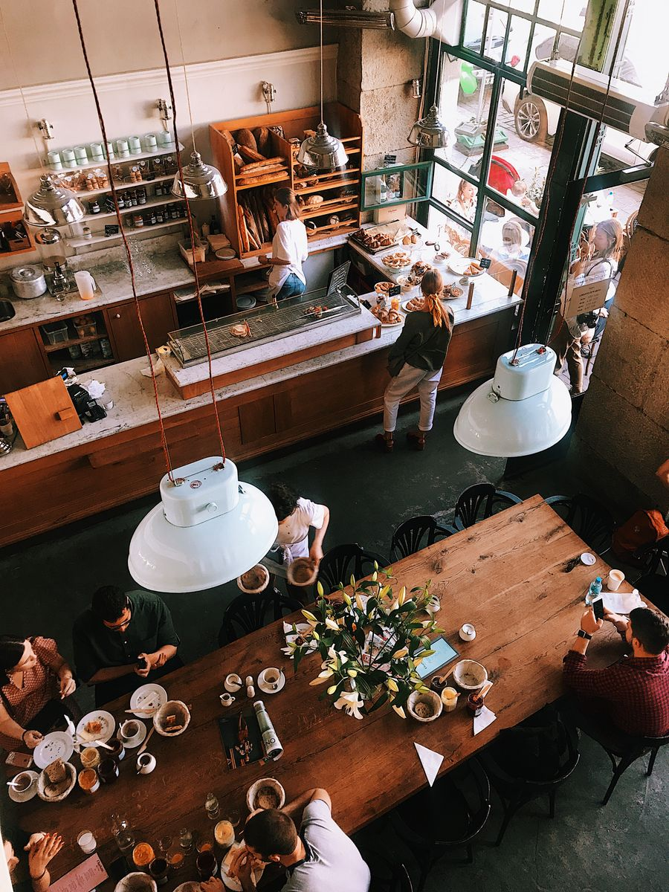
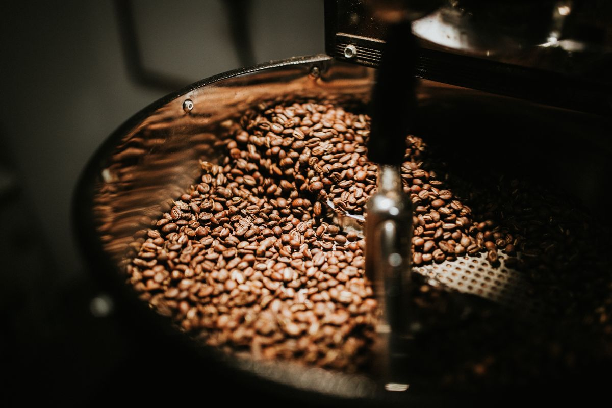
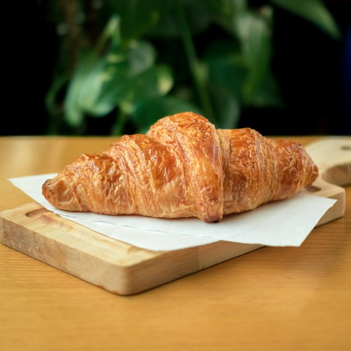
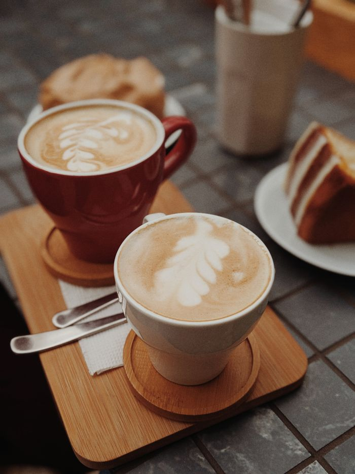
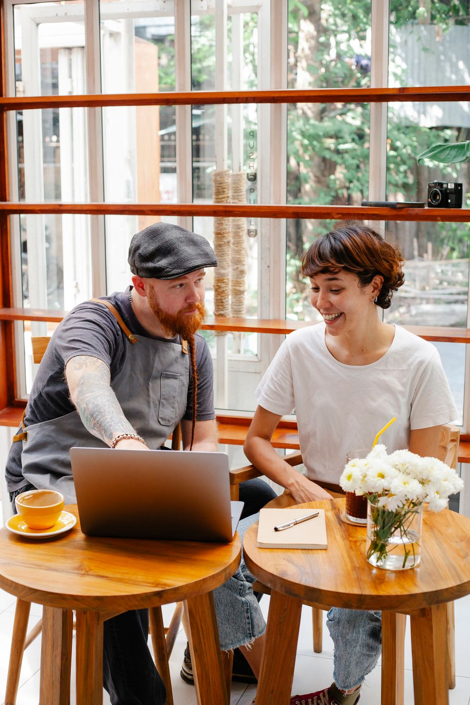

Café recetado con precisión de farmacia.
Tostamos en pequeñas tandas y preparamos cada taza pesando, midiendo y cronometrando. En una antigua botica de San Telmo.
Ver el recetario

Una farmacia de 1924, ahora llena de café
Cuando encontramos el local, todavía conservaba los estantes de roble, los frascos de vidrio y el mostrador de mármol. Decidimos no tocar casi nada.
Donde antes se preparaban jarabes, hoy pesamos granos de Colombia, Etiopía y Brasil. Cada café del menú tiene su receta escrita: gramos, temperatura y tiempo de extracción. Si te interesa, el barista te la explica.
Recetario
Cada preparación con su fórmula. Los precios incluyen el café o té del día; preguntá por los orígenes disponibles.
Un día en la botica




Visitanos
Defensa 1180, San Telmo, Buenos Aires.
A dos cuadras de Plaza Dorrego.
- Lunes a viernes8 a 19 h
- Sábados9 a 20 h
- Domingos10 a 18 h
Los domingos hay feria en la calle: conviene reservar mesa.